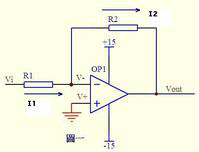
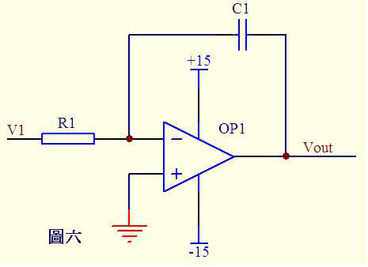

硬件
数字电路
电平转换
现在低压、低耗器件越来越多，3.3v、2.1v电平信号越来越常见。这就存在了一个电平转换问题。当然很多时候都不需要转化，一些器件 具有较大的包容性。具体能不能包容多种电平需要查看IC手册。如果能容忍其相异的电压，就不需要交转换单元了。加上转换电路肯定会 对通信速度、稳定性有所限制。转化前要注意两个地方。
- ABSOLUTE MAXIMUM RATINGS
这个是保证IC安全、健康的限制参数，应用连接时千万别超过这个范围。比如：DVDD(模拟电源)对DGND(模拟地)电压范围是 -0.3V到 +6.0V ;数字I/O口电压对地电压范围是 -0.3V到+vdd+0.3V 。
- 需不需要电平信号转换单元就看下面这个参数
可见这个IC的数字逻辑输入低电平门限<0.7V(3.3V情况)；高电平门限>2V(3.3V情况)；当然这些参数都是限制在ABSOLUTE MAXIMUM RATINGS的。 下面转入正题，看看电平转换方法。
- 较低电平转较高电平（比如3.3V转5V）：
“低”接较低电平信号；“高”接较高电平信号。两个晶体管，保证两端信号极性一致。
- 较高电平转较低电平（比如5转3.3V）：
分析:当“高”处（+5V电平信号）输出为逻辑1，二极管截至（相当于断开），低处被上拉到约+3.3V。当“低”处（+5V电平信号）输出 为逻辑0，二极管导通，理想情况“低”处导通到0电压，实际“低”处电压是二极管导通压降（0.7V左右，如果觉得高，可以使用肖特基 二极管，肖特基二极管管压降小）。有一些电平信号转换可以采用比较器，我以前在一个比较器手册上看过这种应用，也十分方便，就是 成本有些高。一些网友说，可以在不同电平信号之间串一个小电阻解决问题。我也这样试过（3.3V的cyclon2与5V的单片机通信），好像 能正常使用，不过总感觉不太安稳，呵呵。 还有其他的一些方法总结如下：
- 电阻分压
利用电阻分压的方法,其原理如图1所示.其成本比较低并且结构简单,可以作为一种应急的方案.但是,该电路实际的输出电压显然要小于 3.3V,并且随着负载的变化,输出电压也会产生波动.此外,这种电路的无功功耗也比较大.
- 直接采用电源模块
考虑到开关电源设计的复杂性,一些公司推出了基于开关电源技术的低电压输出电源模块.这些模块可靠性和效率都很高,电磁辐射小,而且 许多模块还可以实现电源隔离.这些电源模块使用方便,只需增加很少的外围元件,但是价格比较昂贵.
- 利用线性稳压电源转换芯片
线性稳压芯片是一种最简单的电源转换芯片,基本上不需要外围元件.但是传统的线性稳压器,如LM317,要求输入电压比输出电压高2V或者 更大,否则就不能够正常工作.因此对于5V的输入,输出并不能够达到3.3V.面对低压电源的需求,许多电源芯片公司推出了低压差线性稳压 器(LDO).这种电源芯片的压差只有1.3V~0.2V,可以实现5V转3.3V的要求.LDO所需的外围器件数目少、使用方便、成本较低、纹波小、无电 磁干扰.例如,TI公司的TPS73xx系列就是TI公司为配合DSP而设计的电源转换芯片,其输出电流可以达到500mA,且接口电路非常简单,只需接 上必要的外围电阻,就可以实现电源转换.该系列分为固定电压输出的芯片和可调电压输出的芯片,但这种芯片通常效率不是很高. 综合几种电源的优缺点,DSP系统采用LDO芯片TPS7333.此芯片是TI公司专门为3.3V低压系统设计的,它是固定输出3.3V,且有上电产生DSP系 统复位所需的信号.此外它输出电流可达几百毫安,输出功率完全能够满足系统所需.具体电路如图2所示.
- 3.3V转5V 电平转换方法参考
- 晶体管+上拉电阻法
就是一个双极型三极管或 MOSFET，C/D极接一个上拉电阻到正电源，输入电平很灵活，输出电平大致就是正电源电平。
- OC/OD 器件+上拉电阻法
跟 1) 类似。适用于器件输出刚好为 OC/OD 的场合。
- 74xHCT系列芯片升压 (3.3V→5V)
凡是输入与 5V TTL 电平兼容的 5V CMOS 器件都可以用作 3.3V→5V 电平转换。——这是由于 3.3V CMOS 的电平刚好和5V TTL电平兼容 （巧合），而 CMOS 的输出电平总是接近电源电平的。廉价的选择如 74xHCT(HCT/AHCT/VHCT/AHCT1G/VHCT1G/…) 系列 (那个字母 T 就 表示 TTL 兼容)。
- 超限输入降压法 (5V→3.3V, 3.3V→1.8V, …)
凡是允许输入电平超过电源的逻辑器件，都可以用作降低电平。这里的"超限"是指超过电源，许多较古老的器件都不允许输入电压超过电 源，但越来越多的新器件取消了这个限制 (改变了输入级保护电路)。例如，74AHC/VHC 系列芯片，其 datasheets 明确注明"输入电压范 围为0~5.5V"，如果采用 3.3V 供电，就可以实现 5V→3.3V 电平转换。
- 专用电平转换芯片
最著名的就是 164245，不仅可以用作升压/降压，而且允许两边电源不同步。这是最通用的电平转换方案，但是也是很昂贵的 (俺前不久 买还是￥45/片，虽是零售，也贵的吓人)，因此若非必要，最好用前两个方案。
- 电阻分压法
最简单的降低电平的方法。5V电平，经1.6k+3.3k电阻分压，就是3.3V。
- 限流电阻法
如果嫌上面的两个电阻太多，有时还可以只串联一个限流电阻。某些芯片虽然原则上不允许输入电平超过电源，但只要串联一个限流电阻， 保证输入保护电流不超过极限(如 74HC 系列为 20mA)，仍然是安全的。
- 无为而无不为法
只要掌握了电平兼容的规律。某些场合，根本就不需要特别的转换。例如，电路中用到了某种 5V 逻辑器件，其输入是 3.3V 电平，只要 在选择器件时选择输入为 TTL 兼容的，就不需要任何转换，这相当于隐含适用了方法3)。
- 比较器法
运放法/比较器少用。
- 电平转换的"五要素
- 电平兼容
解决电平转换问题，最根本的就是要解决逻辑器件接口的电平兼容问题。而电平兼容原则就两条：VOH > VIH and VOL < VIL 再简单不过 了！当然，考虑抗干扰能力，还必须有一定的噪声容限：|VOH-VIH| > VN+ and |VOL-VIL| > VN-其中，VN+和VN-表示正负噪声容限。只 要掌握这个原则，熟悉各类器件的输入输出特性，可以很自然地找到合理方案，如前面的方案(3)(4)都是正确利用器件输入特性的例子。
- 电源次序
多电源系统必须注意的问题。某些器件不允许输入电平超过电源，如果没有电源时就加上输入，很可能损坏芯片。这种场合性能最好的办 法可能就是方案(5)——164245。如果速度允许，方案(1)(7)也可以考虑。
- 速度/频率
某些转换方式影响工作速度，所以必须注意。像方案(1)(2)(6)(7)，由于电阻的存在，通过电阻给负载电容充电，必然会影响信号跳沿速 度。为了提高速度，就必须减小电阻，这又会造成功耗上升。这种场合方案(3)(4)是比较理想的。
- 输出驱动能力
如果需要一定的电流驱动能力，方案(1)(2)(6)(7)就都成问题了。这一条跟上一条其实是一致的，因为速度问题的关键就是对负载电容的充电能力。
- 路数
某些方案元器件较多，或者布线不方便，路数多了就成问题了。例如总线地址和数据的转换，显然应该用方案(3)(4)，采用总线缓冲器芯 片(245,541,16245…)，或者用方案(5)。
- 成本&供货
前面说的164245就存在这个问题。"五要素"冒出第6个，因为这是非技术因素，而且太根本了，以至于可以忽略。
- RS232的电平
RS232电平发送器为+5V～+15V为逻辑负，-5V～-15V为逻辑正, 接收器典型的工作电平在+3～+12V与-3～-12V。由于发送电平与接收电平 的差仅为2V至3V左右，所以其共模抑制能力差，再加上双绞线上的分布电容，其传送距离最大为约15米，最高速率为20kb/s。RS-232是为 点对点（即只用一对收、发设备）通讯而设计的，其驱动器负载为3～7kΩ。所以RS-232适合本地设备之间的通信。
- RS485的电平
发送驱动器A、B之间的正电平在+2～+6V，是一个逻辑状态1，负电平在-2～-6V，是另一个逻辑状态0。当在收端AB之间有大于+200mV的电 平时，输出正逻辑电平，小于-200mV时，输出负逻辑电平。接收器接收平衡线上的电平范围通常在200mV至6V之间。
- TTL电平
TTL电平为2.0V～5V为逻辑正，0～0.8V为逻辑负
- CMOS电平
CMOS电平：0.7Vcc以上为逻辑正，0.3Vcc以下为负, 输出逻辑1电平电压接近于电源电压，逻辑电平0接近于0V。而且具有很宽的噪声容限。 输入逻辑1电平电压大于电源电压的1/2 VCC～VCC；输入逻辑0电平电压小于电源电压的1/2 VCC～gnd；
- 高电平低电平,逻辑电平的一些概念
要了解逻辑电平的内容，首先要知道以下几个概念的含义：
- 输入高电平（Vih）： 保证逻辑门的输入为高电平时所允许的最小输入高电平，当输入电平高于Vih时，则认为输入电平为高电平。
- 输入低电平（Vil）：保证逻辑门的输入为低电平时所允许的最大输入低电平，当输入电平低于Vil时，则认为输入电平为低电平。
- 输出高电平（Voh）：保证逻辑门的输出为高电平时的输出电平的最小值，逻辑门的输出为高电平时的电平值都必须大于此Voh。
- 输出低电平（Vol）：保证逻辑门的输出为低电平时的输出电平的最大值，逻辑门的输出为低电平时的电平值都必须小于此Vol。
- 阀值电平(Vt)： 数字电路芯片都存在一个阈值电平，就是电路刚刚勉强能翻转动作时的电平。它是一个界于Vil、Vih之间的电压值， 对于CMOS电路的阈值电平，基本上是二分之一的电源电压值，但要保证稳定的输出，则必须要求输入高电平> Vih，输入低电平<Vil， 而如果输入电平在阈值上下，也就是Vil～Vih这个区域，电路的输出会处于不稳定状态 。
- 对于一般的逻辑电平，以上参数的关系如下： Voh > Vih > Vt > Vil > Vol。
- Ioh：逻辑门输出为高电平时的负载电流（为拉电流）。
- Iol：逻辑门输出为低电平时的负载电流（为灌电流）。
- Iih：逻辑门输入为高电平时的电流（为灌电流）。
- Iil：逻辑门输入为低电平时的电流（为拉电流）。
- 常用的逻辑电平
- 逻辑电平：有TTL、CMOS、LVTTL、ECL、PECL、GTL；RS232、RS422、LVDS等:其中TTL和CMOS的逻辑电平按典型电压可分为四类：5V系列 （5V TTL和5V CMOS）、3.3V系列，2.5V系列和1.8V系列。
- 5V TTL和5V CMOS逻辑电平是通用的逻辑电平。
- 3.3V及以下的逻辑电平被称为低电压逻辑电平，常用的为LVTTL电平。
- 低电压的逻辑电平还有2.5V和1.8V两种。
- ECL/PECL和LVDS是差分输入输出。
- RS-422/485和RS-232是串口的接口标准，RS-422/485是差分输入输出，RS-232是单端输入输出。
模拟电路
放大器
- 虚短和虚断
由于运放的电压放大倍数很大，一般通用型运算放大器的开环电压放大倍数都在80 dB以上。而运放的输出电压是有限的，一般在10V～
14V。因此运放的差模输入电压不足1mV，两输入端近似等电位，相当于 “短路”。开环电压放大倍数越大，两输入端的电位越接近
相等。 虚短 是指在分析运算放大器处于线性状态时，可把两输入端视为等电位，这一特性称为虚假短路，简称 虚短 。显然不能
将两输入端真正短路。由于运放的差模输入电阻很大，一般通用型运算放大器的输入电阻都在1MΩ以上。因此流入运放输入端的电流往
往不足1uA，远小于输入端外电路的电流。故 通常可把运放的两输入端视为开路，且输入电阻越大，两输入端越接近开路。 虚断 是
指在分析运放处于线性状态时，可以把两输入端视为等效开路，这一特性 称为虚假开路，简称 虚断 。显然不能将两输入端真正断
路。
- 图img-amplifer1运放的同向端接地=0V，反向端和同向端虚短，所以也是0V，反向输入端输入电阻很高，虚断，几乎没有电
流注入和流出，那么R1和R2相当于是串联的，流过一个串联电路中的每一只组件的电流是相同的，即流过R1的电流和流过R2的电流
是相同的。流过R1的电流 $$I_{1} = (Vi - V-)/R_{1}$$ 流过R2的电流 $$I_{2} = (V-V_{out})/R_{2}$$
$$V- = V+ =0$$ $$I_{1} = I_{2}$$ 求解上面的初中代数方程得$$V_{out} = (-R_{2}/R_{1})*V_{i}$$ 这就是传说中的反向放大
器的输入输出关系式了。

反向放大器
- 图img-amplifer2中Vi与V-虚短，则 $$V_{i} = V-$$ 因为虚断，反向输入端没有电流输入输出，通过R1和R2 的电流相
等，设此电流为I，由欧姆定律得： $$I = V_{out}/(R_{1}+R_{2})$$ Vi等于R2上的分压，即： $$V_{i} = I*R_{2}$$ 由以上
式子式得 $$V_{out}=V_{i}*(R_{1}+R_{2})/R_{2}$$ 这就是同向放大器。

同向放大器
- 图img-amplifer3中，由虚短知： $$V- = V+ = 0$$ 由虚断及基尔霍夫定律知，通过R2与R1的电流之和等于通过R3的电
流，故 $$(V_{1} - V-)/R_{1} + (V_{2} - V-)/R_{2} = (V_{out} - V-)/R_{3}$$ 代入a式，b式变为
$$V_{1}/R_{1} + V_{2}/R_{2} = V_{out}/R_{3}$$ 如果取R1=R2=R3，则上式变为 $$V_{out}=V_{1}1+V_{2}$$ ，这就是加法器。

加法器
- 图img-amplifer4。因为虚断，运放同向端没有电流流过，则流过R1和R2的电流相等，同理流过R4和R3的电流也相等。故
$$(V_{1} - V+)/R_{1} = (V+ - V_{2})/R_{2}$$ $$(V_{out} - V-)/R_{3} = V-/R_{4}$$由虚短知：$$ V+ = V-$$
如果R1=R2，R3=R4，则由以上式子可以推导出$$V+ = (V_{1} + V_{2})/2$$ $$ V- = V_{out}/2$$ 故
$$V_{out} = V_{1}+V_{2}$$ 也是一个加法器.

加法器2
- 图img-amplifer5由虚断知，通过R1的电流等于通过R2的电流，同理通过R4的电流等于R3的电流，故
有 $$(V_{2}-V+)/R_{1}=V+/R_{2}$$ $$(V_{1} - V-)/R_{4} = (V- - V_{out})/R_{3}$$ 如果R1=R2， 则
$$V+ = V_{2}/2$$ 如果R3=R4， 则 $$V- = (V_{out} + V_{1})/2$$ 由虚短知V+ = V- 所以$$V_{out}=V_{2}-V_{1}$$
这就是减法器。

减法器
- 图img-amplifer6电路中，由虚短知，反向输入端的电压与同向端相等，由虚短知，通过R1的电流与通过C1的电流相等。通
过R1的电流 $$i=V_{1}/R_{1}$$ 通过C1的电流 $$i=C*dU_{c}/dt=-C*dV_{out}/dt$$ 所
以 $$V_{out}=((-1/(R_{1}*C_{1}))∫V_{1}dt$$ 输出电压与输入电压对时间的积分成正比,这就是积分电路。若V1为恒定电压U，
则上式变换为 $$V_{out} = -U*t/(R_{1}*C_{1}) $$ t是时间，则Vout输出电压是一条从0至负电源电压按时间变化的直线。

积分电路
- 图img-amplifer7中由虚断知，通过电容C1和电阻R2的电流是相等的，由虚短知，运放同向端与反向端电压是相等的。则：
$$V_{out} = -i * R_{2} = -(R_{2}*C_{1})dV_{1}/dt$$ 这是一个微分电路。如果V1是一个突然加入的直流电压，则输出
Vout对应一个方向与V1相反的脉
微分电路
- 图img-amplifer1运放的同向端接地=0V，反向端和同向端虚短，所以也是0V，反向输入端输入电阻很高，虚断，几乎没有电
流注入和流出，那么R1和R2相当于是串联的，流过一个串联电路中的每一只组件的电流是相同的，即流过R1的电流和流过R2的电流
是相同的。流过R1的电流 $$I_{1} = (Vi - V-)/R_{1}$$ 流过R2的电流 $$I_{2} = (V-V_{out})/R_{2}$$
$$V- = V+ =0$$ $$I_{1} = I_{2}$$ 求解上面的初中代数方程得$$V_{out} = (-R_{2}/R_{1})*V_{i}$$ 这就是传说中的反向放大
器的输入输出关系式了。
电源地和信号地
- 电源地主要是针对电源回路电流所走的路径而言的，一般来说电源地流过的电流较大，而信号地主要是针对两块芯片或者模块之间的 通信信号的回流所流过的路径，一般来说信号地流过的电流很小，其实两者都是GND，之所以分开来说，是想让大家明白在布PCB板时 要清楚地了解电源及信号回流各自所流过的路径，然后在布板时考虑如何避免电源及信号共用回流路径，如果共用的话，有可能会导 致电源地上大的电流会在信号地上产生一个电压差（可以解释为：导线是有阻抗的，只是很小的阻值，但如果所流过的电流较大时， 也会在此导线上产生电位差，这也叫共阻抗干扰），使信号地的真实电位高于0V，如果信号地的电位较大时，有可能会使信号本来是 高电平的，但却误判为低电平。当然电源地本来就很不干净，这样做也避免由于干扰使信号误判。所以将两者地在布线时稍微注意一 下，就可以。一般来说即使在一起也不会产生大的问题，因为数字电路的门限较高。
- 电源：电源使用了两个，继电器、电磁阀、电机使用24V电源，而单片机使用了12V->5V的电源。两种电源的独立布线有利于单片机工 作稳定。单片机的电源使用了uF级及104陶瓷电容进行高低频滤波，同时每块数字电路的VCC/GND脚都接有104退耦电容，增强稳定性。
- 接地：这块板子上有电源地（大电流）及信号地（弱电流）两种，为了减少串扰，两种地各自独立布线，而最后汇集在电源上才单点 接地。同时，对于所有的信号地进行了大面积接地敷铜，提高抗干扰能力。信号地的敷铜采用接地节点直接连接而不是莲花连接，最 大限度减少接地电阻。晶振也预留了接地焊盘，焊接时把晶振的金属外壳接地，能大量减少EMI。
- 保护地跟信号地的连接：保护地跟信号地没有采用直接连接，而是之间焊接了一个耐1000V的104陶瓷电容，这能最大限度地减少电磁 干扰并提高抗静电能力
几种地线
- 数字地：也叫逻辑地，是各种开关量（数字量）信号的零电位。
- 模拟地：是各种模拟量信号的零电位。
- 信号地：通常为传感器的地。
- 交流地：交流供电电源的地线，这种地通常是产生噪声的地。
- 直流地：直流供电电源的地。
- 屏蔽地：也叫机壳地，为防止静电感应和磁场感应而设。
以上这些地线处理是系统设计、安装、调试中的一个重要问题。下面就接地问题提出一些看法：
- 控制系统宜采用一点接地。一般情况下,高频电路应就近多点接地，低频电路应一点接地。在低频电路中，布线和元件间的电感并不是 什么大问题，然而接地形成的环路的干扰影响很大，因此，常以一点作为接地点；但一点接地不适用于高频，因为高频时，地线上具 有电感因而增加了地线阻抗，同时各地线之间又产生电感耦合。一般来说，频率在1MHz以下,可用一点接地；高于10MHz时，采用多点 接地；在1～10MHz之间可用一点接地，也可用多点接地。
- 交流地与信号地不能共用。由于在一段电源地线的两点间会有数mV甚至几V电压，对低电平信号电路来说，这是一个非常重要的干扰， 因此必须加以隔离和防止。
- 浮地与接地的比较。全机浮空即系统各个部分与大地浮置起来，这种方法简单，但整个系统与大地绝缘电阻不能小于50MΩ。这种方法 具有一定的抗干扰能力，但一旦绝缘下降就会带来干扰。还有一种方法，就是将机壳接地，其余部分浮空。这种方法抗干扰能力强， 安全可靠，但实现起来比较复杂。
- 模拟地。模拟地的接法十分重要。为了提高抗共模干扰能力，对于模拟信号可采用屏蔽浮技术。对于具体模拟量信号的接地处理要严 格按照操作手册上的要求设计。
- 屏蔽地。在控制系统中为了减少信号中电容耦合噪声、准确检测和控制，对信号采用屏蔽措施是十分必要的。根据屏蔽目的不同，屏 蔽地的接法也不一样。电场屏蔽解决分布电容问题，一般接大地；电磁场屏蔽主要避免雷达、电台等高频电磁场辐射干扰。利用低阻 金属材料高导流而制成，可接大地。磁场屏蔽用以防磁铁、电机、变压器、线圈等磁感应，其屏蔽方法是用高导磁材料使磁路闭合， 一般接大地为好。当信号电路是一点接地时，低频电缆的屏蔽层也应一点接地。如果电缆的屏蔽层地点有一个以上时，将产生噪声电 流，形成噪声干扰源。当一个电路有一个不接地的信号源与系统中接地的放大器相连时，输入端的屏蔽应接至放大器的公共端；相反， 当接地的信号源与系统中不接地的放大器相连时，放大器的输入端也应接到信号源的公共端。
对于电气系统的接地，要按接地的要求和目的分类，不能将不同类接地简单地、任意地连接在一起，而是要分成若干独立的接地子系统，每个子系统都有其共同的接地点或接地干线，最后才连接在一起，实行总接地
阻抗
阻抗一般分为输入阻抗和输出阻抗。 输入阻抗是对负载而言，输出阻抗主要是对电源端而言，电压，电流的内阻即相当于输出阻抗。负载相对于输入阻抗。对于电压源，输入 阻抗越大越好（例如一个实际电源由电源加内阻组成，当负载过小（输入阻抗太小），显然该负载获的得电压会小于电源电压，产生偏 差）。对电流源，输入阻抗越小越好（一个恒流源由电流源加内阻组成，当负载远小于内阻时候，才能保证恒定电流不变）。当示波器接 入光探头，探头的输入阻抗要更改成50欧姆的原因
射频
射频功率基本概念
- dB dB 在缺省情况下总是定义功率单位，以 10log 为计, 是一个纯计数单位：dB = 10logX。dB的意义其实再简单不过了，就是把一个很大（后面跟一长串0的）或者很小（前面有一长串0 的）的数比较简短地表示出来。如：X=1000000000000000= 10logX=150dB; X=0.000000000000001=10logX=-150 dB
- dBm 定义的是miliwatt, 0dBm = 10log1 mw, 功率单位与P（瓦特）换算公式：\(dBm=30+10lgP\) (P:瓦 ), 在dB，dBm计算中，要注意基 本概念。比如前面说的 0dBw = 10log1W = 10log1000mw = 30dBm；又比如，用一个dBm 减另外一个dBm时，得到的结果是dB。如： 30dBm - 0dBm = 30dB。一般来讲，在工程中，dB和dB之间只有加减，没有乘除。而用得最多的是减法：dBm 减 dBm 实际上是两个功率 相除，信号功率和噪声功率相除就是信噪比（SNR）。dBm 加 dBm 实际上是两个功率相乘，
- dBw 定义watt。0dBw=10log1 W = 10log1000 mw = 30 dBm。
- dBi和dBd dBi和dBd是考征增益的值（功率增益），两者都是一个相对值，但参考基准不一样。dBi的参考基准为全方向性天线，dBd的参考基准为 偶极子，所以两者略有不同。一般认为，表示同一个增益，用dBi表示出来比用dBd表示出来要大2. 15.
- dBc 它也是一个表示功率相对值的单位，与dB的计算方法完全一样。一般来说，dBc 是相对于载波（Carrier）功率而言，在许多情况下， 用来度量与载波功率的相对值，如用来度量干扰（同频干扰、互调干扰、交调干扰、带外干扰等）以及耦合、杂散等的相对量值。在采 用dBc的地方，原则上也可以使用dB替代
对于无线工程师来说更常用分贝dBm这个单位，dBm单位表示相对于1毫瓦的分贝数，dBm和W之间的关系是：dBm=10*lg(mW)1w的功率，换算 成dBm就是10×lg1000＝30dBm。2w是33dBm，4W是36dBm，瓦数增加一倍，dBm就增加3。用dBm做单位原因大致有几个：
- 对于无线信号的衰减来说，不是线性的，而是成对数关系衰减的。用分贝更能体现这种关系。
- 用分贝做单位比用瓦做单位更容易描述，往往在发射机出来的功率几十上百瓦，到了接收端已经是以微微瓦来计算了。
- 计算方便，衰减的计算公式用分贝来计算只用做加减法就可以了。
以1mW 为基准的dB算法，即0dBm=1mW，dBm=10*log(Power/1mW)。发射功率dBm－路径损失dB＝接收信号强度dBm, 最小通信功率dBm－路径 损失dB≥接收灵敏度下限dBm,最小通信功率dBm≥路径损失dB＋接收灵敏度下限dBm,功率与dbm的对照见表tbl-power-dbm-compare
| dBm | Watts |
|---|---|
| 0 | 1.0 mW |
| 1 | 1.3 mW |
| 2 | 1.6 mW |
| 3 | 2.0 mW |
| 4 | 2.5 mW |
| 5 | 3.2 mW |
| 6 | 4.0 mW |
| 7 | 5.0 mW |
| 8 | 6.0 mW |
| 9 | 8.0 mW |
| 10 | 10 mW |
| 11 | 13 mW |
| 12 | 16 mW |
| 13 | 20 mW |
| 14 | 25 mW |
| 15 | 32 mW |
| 16 | 40 mW |
| 17 | 50 mW |
| 18 | 64 mW |
| 19 | 80 mW |
| 20 | 100 mW |
| 21 | 128 mW |
| 22 | 160 mW |
| 23 | 200 mW |
| 24 | 250 mW |
| 25 | 320 mW |
| 26 | 400mW |
| 27 | 500mW |
| 28 | 640mW |
| 29 | 800mW |
| 30 | 1.0W |
| 31 | 1.3W |
| 32 | 1.6W |
| 33 | 2.0W |
| 34 | 2.5W |
| 35 | 3.0W |
| 36 | 4.0W |
| 37 | 5.0W |
| 38 | 6.0W |
| 39 | 8.0W |
| 40 | 10W |
| 41 | 13W |
| 42 | 16W |
| 43 | 20W |
| 44 | 25W |
| 45 | 32W |
| 46 | 40W |
| 47 | 50W |
| 48 | 64W |
| 49 | 80W |
| 50 | 100W |
| 60 | 1000W |
天线的基础知识
表征天线性能的主要参数有方向图，增益，输入阻抗，驻波比，极化方式等
- 天线的输入阻抗
天线的输入阻抗是天线馈电端输入电压与输入电流的比值。天线与馈线的连接，最佳情形是天线输入阻抗是纯电阻且等于馈线的特性阻
抗，这时馈线终端没有功率反 射，馈线上没有驻波，天线的输入阻抗随频率的变化比较平缓。天线的匹配工作就是消除天线输入阻抗
中的电抗分量，使电阻分量尽可能地接近馈线的特性阻抗。匹 配的优劣一般用四个参数来衡量即反射系数，行波系数，驻波比和回波
损耗，四个参数之间有固定的数值关系，使用那一个纯出于习惯。在我们日常维护中，用的较 多的是驻波比和回波损耗。一般移动通
信天线的输入阻抗为50Ω。
- 驻波比：它是行波系数的倒数，其值在1到无穷大之间。驻波比为1，表示完 全匹配；驻波比为无穷大表示全反射，完全失配。在移 动通信系统中，一般要求驻波比小于1.5，但实际应用中VSWR应小于1.2。过大的驻波比会减小基站 的覆盖并造成系统内干扰加大， 影响基站的服务性能。
- 回波损耗：它是反射系数绝对值的倒数，以分贝值表示。回波损耗的值在0dB的到无穷大之间，回波损耗越大表示匹配越差，回波损 耗越大表示匹配越好。0表示全反射，无穷大表示完全匹配。在移动通信系统中，一般要求回波损耗大于14dB。
- 天线的极化方式 所谓天线的极化，就是指天线辐射时形成的电场强度方向。当电场强度方向垂直于地面时，此电波就称为垂直极化波；当电场强度方向 平行于地面时，此电波就称为水 平极化波。由于电波的特性，决定了水平极化传播的信号在贴近地面时会在大地表面产生极化电流， 极化电流因受大地阻抗影响产生热能而使电场信号迅速衰减，而 垂直极化方式则不易产生极化电流，从而避免了能量的大幅衰减，保 证了信号的有效传播。因此，在移动通信系统中，一般均采用垂直极化的传播 方式。另外，随着新技术的发展，最近又出现了一种双 极化天线。就其设计思路而言，一般分为垂直与水平极化和±45°极化两种方式，性能上一般后者优于前 者，因此目前大部分采用的 是±45°极化方式。双极化天线组合了+45°和-45°两副极化方向相互正交的天线，并同时工作在收发双工模式下，大大节省了 每个 小区的天线数量；同时由于±45°为正交极化，有效保证了分集接收的良好效果。
- 天线的增益 天线增益是用来衡量天线朝一个特定方向收发信号的能力，它是选择基站天线最重要的参数之一。一般来说，增益的提高主要依*减小 垂直面向辐射的波瓣宽度，而在水平面上保持全向的辐射性能。天线增益对移动通信系统的运行质量极为重要，因为它决定蜂窝边 缘 的信号电平。增加增益就可以在一确定方向上增大网络的覆盖范围，或者在确定范围内增大增益余量。任何蜂窝系统都是一个双向过程， 增加天线的增益能同时减 少双向系统增益预算余量。另外，表征天线增益的参数有dBd和dBi。DBi是相对于点源天线的增益，在各方向 的辐射是均匀的；dBd相对于对称阵子天线 的增益dBi=dBd+2.15。相同的条件下，增益越高，电波传播的距离越远。一般地，GSM定向 基站的天线增益为18dBi，全向的为11dBi。
- 天线的波瓣宽度 波瓣宽度是定向天线常用的一个很重要的参数，它是指天线的辐射图中低于峰值3dB处所成夹角的宽度（天线的辐射图是度量天线各个 方向收发信号能力的一个指标，通常以图形方式表示为功率强度与夹角的关系）。天线垂直的波瓣宽度一般与该天线所对应方向上的覆 盖半径有关。因此，在一定范围内通过对天线垂直度（俯仰角）的调节，可以达到改善小区覆盖质量的目的，这也 是我们在网络优化 中经常采用的一种手段。主要涉及两个方面水平波瓣宽度和垂直平面波瓣宽度。水平平面的半功率角（H－Plane Half Power beamwidth）45°, 60°,90°等)定义了天线水平平面的波束宽度。角度越大,在扇区交界处的覆盖越好，但当提高天线倾角时，也越容 易发生波束畸变,形成越区覆盖。角度越 小，在扇区交界处覆盖越差。提高天线倾角可以在移动程度上改善扇区交界处的覆盖，而且相 对而言，不容易产生对其他小区的越区覆盖。在市中心基站由于站距 小，天线倾角大，应当采用水平平面的半功率角小的天线，郊区 选用水平平面的半功率角大的天线；垂直平面的半功率角（V－Plane Half Power beamwidth）:（48°, 33°,15°,8°）定义了天线 垂直平面的波束宽度。垂直平面的半功率角越小，偏离主波束方向时信号衰减越快，在越容易通过调整天线倾角准确控制覆盖范 围。
- 前后比(Front-Back Ratio) 表明了天线对后瓣抑制的好坏。选用前后比低的天线，天线的后瓣有可能产生越区覆盖，导致切换关系混乱，产生掉话。一般在25－ 30dB之间，应优先选用前后比为30的天线.
晶振与射频
晶振，作为一个系统时钟的提供者，在每个系统中必不可少，只是在一般的单片机系统中，由于对通信速率的要求不高，对晶体的要求比 较低，一般的晶体就能很好满足系统的需要；但是在无线系统中，特别是在高频无线系统中，对于晶体的要求就比 较高。先介绍一个单 位：PPM，是一个缩写，意思是百万分之一，是一个计算晶体或者振荡器频率偏差的计数方法。1ppm偏差对于13MHz来说就是13Hz，10ppm 偏差就是130Hz。标准误差ppm，是晶体实际的频率与标称频率间的误差比值。这个误差一般用±ppm来表示，是指明在25℃下，在指定的 负载电容情况下得值与标称的误差比值，典型的标称误差为±10~50ppm。温度漂移ppm，就是大家常说的频率的温度稳定性。频率的稳定 性是在规定的温度范围内其频率相对于25℃时的频率改变比值。典型的温度漂移范围位±10~30ppm。不过有时温度漂移可以抵消标称误差 的。老化稳定性，是晶体经过一段时间后其频率的变化比值。一个典型的变化是每年有2ppm的变化。
器件
磁珠
EMC分为EMI和EMS，可以理解为EMI是自己对别人的干扰，EMS是别人对自己的干扰。那么磁珠的作用是就有EMI的作用，也有EMS的作用， 就是减小本电路的干扰信号的能量，也同时减小其他电路对自己的干扰信号的能量。其实磁珠是电感的一种特殊形式，电感是在比较大的 范围内对信号的一种阻碍，但磁珠的感抗曲线比较陡峭，就是在某一特定频率（如题中的100MHz，下阻抗是1K欧）会对信号有明显的阻碍 和衰减作用。因此磁珠会将高频能量吸收和消耗掉大部分。
电容
- 关于滤波电容、去耦电容、旁路电容作用见图img-capacity-compare, 在电子电路中，去耦电容和旁路电容都是起到抗干扰的作
用，电容所处的位置不同，称呼就不一样了。对于同一个电路来说，旁路（bypass）电容是把输入信号中的高频噪声作为滤除对象，把
前级携带的高频杂波滤除，而去耦（decoupling）电容也称退耦电容，是把输出信号的干扰作为滤除对象。
电容的不同用法
- 滤波电容: 用在电源整流电路中，用来滤除交流成分。使输出的直流更平滑。
- 去耦电容: 用在放大电路中不需要交流的地方，用来消除自激，使放大器稳定工作。
- 去耦电容主要是去除高频如RF信号的干扰，干扰的进入方式是通过电磁辐射。而实际上，芯片附近的电容还有蓄能的作用，这是 第二位的。 你可以把总电源看作密云水库，我们大楼内的家家户户都需要供水，这时候，水不是直接来自于水库，那样距离太远 了，等水过来，我们已经渴的不行了。实际水是来自于大楼顶上的水塔,水塔其实是一个buffer的作用。如果微观来看，高频器件 在工作的时候，其电流是不连续的，而且频率很高，而器件VCC到总电源有一段距离，即便距离不长，在频率很高的情况下，阻抗 Z＝i*wL+R，线路的电感影响也会非常大，会导致器件在需要电流的时候，不能被及时供给。而去耦电容可以弥补此不足。这也是 为什么很多电路板在高频器件VCC管脚处放置小电容的原因之一.在vcc引脚上通常并联一个去藕电容，这样交流分量就从这个电容 接地。
- 有源器件在开关时产生的高频开关噪声将沿着电源线传播。去耦电容的主要功能就是提供一 个局部的直流电源给有源器件，以减 少开关噪声在板上的传播和将噪声引导到地 ;
- 旁路电容: 用在有电阻连接时，接在电阻两端使交流信号顺利通过。从元件或电缆中转移出不想要的共模RF能量。这主要是通过产生 AC旁路消除无意的能量进入敏感的部分，另外还可以提供基带滤波功能（带宽受限）。我们经常可以看到，在电源和地之间连接着去 耦电容，它有三个方面的作用：一是作为本集成电路的蓄能电容；二是滤除该器件产生的高频噪声，切断其通过供电回路进行传播的 通路；三是防止电源携带的噪声对电路构成干扰。
电阻
- 贴片电阻的标称阻值问题：贴片电阻又叫"矩形片状电阻，是由ROHM公司发明并最早推出市场的。特点是耐潮湿高温，外观尺寸均匀，
精确且温度系数与阻值公差小。
- 标称阻值：贴片电阻阻值用英文符号R表示，1000R等于1K，厂家一般标志105R。贴片电阻常用的误差有5%与1%系列，1%的我们又叫 做精密贴片电阻或者贴片精密电阻。标称在电阻器上的电阻值称为标称值。单位：Ω、kΩ、MΩ。标称值是根据国家制定的标准系 列标注的，不是生产者任意标定的。不是所有阻值的电阻器都存在。
- 温度系数：±ppm/℃，即单位温度引起的电阻值的变化。ppm(Part Per Million)表示百万分之几，比如：标称阻值为1k的电阻，温 度系数为±100ppm/℃，意为温度变化一摄氏度，电阻值的变化为1k±0.1Ω，变化100℃，阻值变化为1k±10Ω，精度非常高了。电 阻的温度系数精密级的在几十ppm，普通的是200～250ppm，最差的也不过500ppm。
- 额定功率：指在规定的环境温度下，假设周围空气不流通，在长期连续工作而不损坏或基本不改变电阻器性能的情况下，电阻器上 允许的消耗功率。常见的有1/16W 、1/8W 、1/4W 、1/2W 、1W 、2W 、5W 、10W 。
- 允许误差：电阻器的实际阻值对于标称值的最大允许偏差范围称为允许误差。误差代码：F 、G 、J、 K…(常见的误差范围是： 0.01%，0.05%，0.1%，0.5%，0.25%，1%，2%,5% 等)。
- 贴片电阻器的材料和性能
- 碳膜系列：利用碳膜电阻系列材料制作的电阻器一般称为“碳膜电阻器”，它主要是把有机材料热分解得到的薄膜电阻器。覆盖1Q 一lOMQ的电阻值范围，价格便宜、制造容易，作为通用电阻器而畅销(流通量最多)。相反，由于温度系数和噪声方面存在问题，不 适用于高精度及信号的电路。
- 厚膜电阻器：厚膜电阻器是把金属类电阻材料与有机填料混合起来印刷后烧成，还可以在其上印刷保护层，使用范围广。现在成为 主流的通用片状电阻器和电阻排也使用这种类型的电阻体。尽管是通用的电阻器，也只是覆盖ioO一lOMQ电阻值范围，温度系数也是 在土300一50ppm/℃。还有，噪声也比碳膜电阻低，流通量仅次于碳膜电阻器，价格便宜、容易买到。厚膜电阻器在材料上下功夫， 制作出了特殊规格的低阻型、高阻型的电阻器，阻值覆盖范围在O.lQ-lOOM,Q以上，在电阻器中覆盖了最大的电阻值范围。
- 薄膜电阻器：薄膜电阻器主要是进行真空蒸发，以形成电阻体，与厚膜制作;法和特性不同。制造设备规模大，电阻材料自由度大， 能够得到好性能的电阻器。电阻值的范围大约为100一1MQ，温度系数为土100-5ppm/℃。由于电阻的连续性好、噪声小，适用于高精 度/小信号的电路。价格和易购性比以前大有改进。 一般情况下，薄膜电阻器的电阻值也可以做到O.lO一100MQ,温度系致寺万面虽 然不太好，但作为商精度的1战阻电阻器还是很重要的。
- 金属氧化膜电阻器：金属氧化膜电阻器是把锡等金属的化合物加热氧化后得到的，俗称“金属氧化物”。金属丝以及金属带：电阻 器采用锰(镍)铜和镍铬等合金丝和带状线，主要作为绕线型使用。材料的自由度大，温度系数为±200-5ppm/℃。因为机械方面的限 制，不能使用过细电阻丝，电阻值的范围偏于O.lQ一数十kO。与其他电阻器相比，由于金属丝和金属带的截面积大，故具有耐瞬时 大电流的优点。
- 电阻的额定功率: 这个功率一般是指在常温环境下，保证电阻正常工作时所允许的最大耗散功率。一般对应一个电阻体的温度提升范围。 例如，在正常安装条件下，当该电阻功耗达到1/4W时，电阻体会形成50度的温升，即电阻体温度达到75度。实际使用中，如果环境温度 偏高，该功率容量应该降额使用。例如，如果该电阻旁边有个器件会达到50度，此时就只能按1/8W来用了。同样，如果安装条件改善， 例如增加散热片，或强制通风，这个功率适当放大也是许可的，但一般不会这样做。这个功率一般会留有一定的余量，除非功耗超出很 多，或者环境恶劣，等额使用直接烧坏电阻一般不至于。
芯片内核
51单片机
- MCS-51中断函数注意如下
- 中断函数不能进行参数传递，如果中断函数中包含任何参数声明都将导致编译出错。
- 断函数没有返回值，如果企图定义一个返回值将得不到正确的结果，建议在定义中断函数时将其定义为void类型，以明确说明没有 返回值。
- 在任何情况下都不能直接调用中断函数，否则会产生编译错误。因为中断函数的返回是由8051单片机的RETI指令完成的，RETI指令 影响8051单片机的硬件中断系统。如果在没有实际中断情况下直接调用中断函数，RETI指令的操作结果会产生一个致命的错误。
- 如果在中断函数中调用了其它函数，则被调用函数所使用的寄存器必须与中断函数相同。否则会产生不正确的结果。
- C51编译器对中断函数编译时会自动在程序开始和结束处加上相应的内容，具体如下：在程序开始处对ACC、B、DPH、DPL和PSW入栈， 结束时出栈。中断函数未加using n修饰符的，开始时还要将R0~R1入栈，结束时出栈。如中断函数加using n修饰符，则在开始将 PSW入栈后还要修改PSW中的工作寄存器组选择位。
- C51编译器从绝对地址8m+3处产生一个中断向量，其中m为中断号，也即interrupt后面的数字。该向量包含一个到中断函数入口地址 的绝对跳转。
- 中断函数最好写在文件的尾部，并且禁止使用extern存储类型说明。防止其它程序调用。